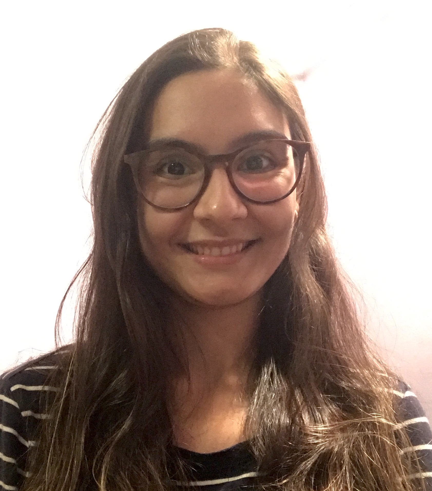
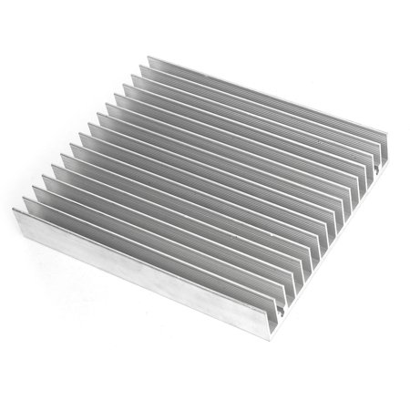
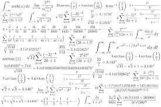

Lívia M. Corrêa
Welcome to my webpage!
I am a M.Sc. student at the Graduate Program of Mechanical Engineering at the Rio de Janeiro State University (PPG-EM UERJ). I currently work with the development of semi-analytical formulations for heat transfer problems at the GESAR lab, Group for Environmental Studies in Reservoirs.
- Heat and Mass Transfer
- Integral Transform Technique
- Thermodynamics
- Computational Fluid Dynamics
- Numerical Methods
Email: livcorrea@yahoo.com.br
Education
Candidate
M.Sc. in Mechanical Engineering
Rio de Janeiro State University (UERJ)
Rio de Janeiro, Brazil.
Research Topics


Thermal Analysis of heat sinks for electronic cooling

Semi-analytical solutions for Heat Transfer Problems

Tools & Links

- GESAR website - Group of Environmental Studies in Reservoirs
- Department of Mechanical Engineering at UERJ website
- Coursera website: Mechanical Engineering courses
- Prof. Daniel Chalhub website
- Prof. Gustavo Anjos website
- Prof. Américo Cunha website
- ABCM website - Associação Brasileira de Ciências Mecânicas
- ASME website - The American Society of Mechanical Engineers